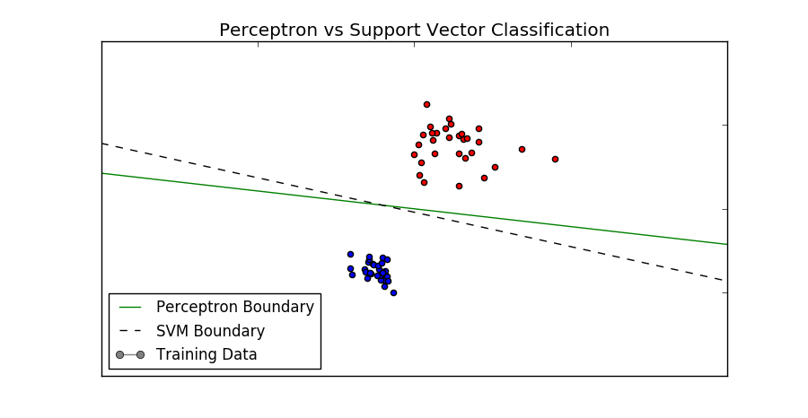
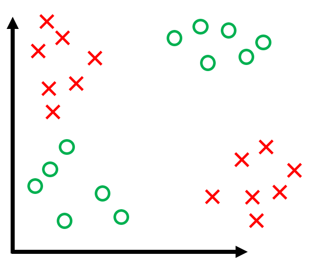
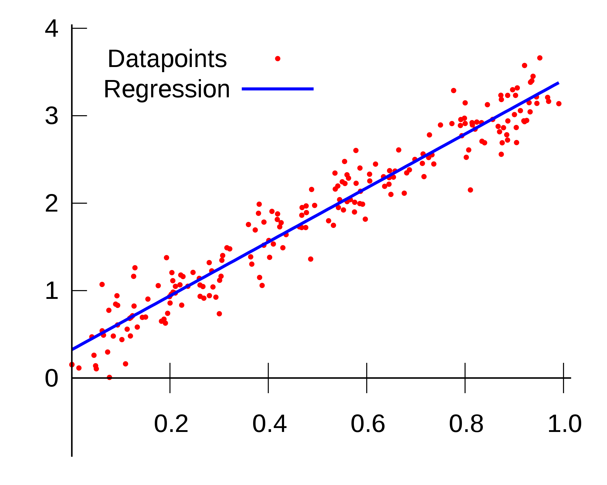
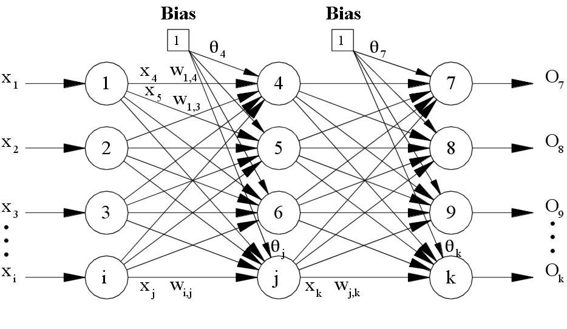
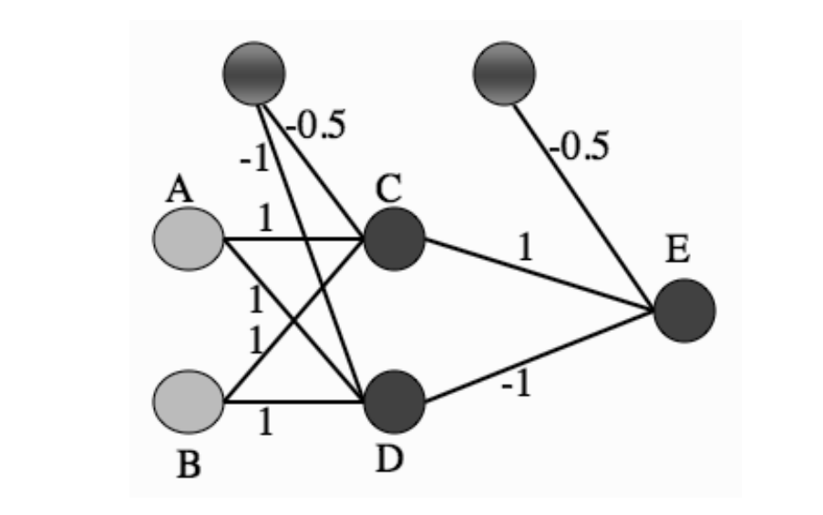
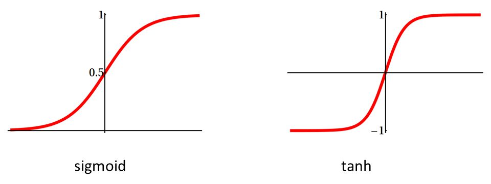

class: center, middle # Multi Layer Perceptron <h3 style="color: darkblue">Tae Geun Kim</h3> --- ## Table of Contents -- * What can be done by perceptron? -- * What can't be done by perceptron? -- * Linear Regression -- * Multi Layer Perceptron --- class: center, middle # What can be done by perceptron? --- ## What perceptron really do? -- ### <font color="blue">Linear Discrimination!</font> --  --- ```d // D Code of Single Layer Perceptron Matrix output(Matrix weights, Matrix input) { auto s = input % weights; auto g = VectorizeM(x => activation(x)); return g(s); } ``` -- Output : $$ y\_j = g\left(\sum\_i x\_i w\_{ij} \right) $$ -- * Guess is just linear - inner product of weight and input. -- * Thus, perceptron do linear sepeartion (or discrimination) --- class: center, middle # What can't be done by perceptron? --- ## What perceptron can't do? -- ### <font color="red">Just non-linear</font> -- .center[] --- ### Example - XOR <table id="tab01" align="center"> <tr> <th>\(In_1\)</th> <th>\(In_2\)</th> <th>\(t\)</th> </tr> <tr> <td>0</td> <td>0</td> <td>0</td> </tr> <tr> <td>0</td> <td>1</td> <td>1</td> </tr> <tr> <td>1</td> <td>0</td> <td>1</td> </tr> <tr> <td>1</td> <td>1</td> <td>0</td> </tr> </table> -- <br> Q. Can perceptron learning this example? -- No! But.. --- ### Example - XOR (3D) <table id="tab01" align="center"> <tr> <th>\(In_1\)</th> <th>\(In_2\)</th> <th>\(In_3\)</th> <th>\(t\)</th> </tr> <tr> <td>0</td> <td>0</td> <td>1</td> <td>0</td> </tr> <tr> <td>0</td> <td>1</td> <td>0</td> <td>1</td> </tr> <tr> <td>1</td> <td>0</td> <td>0</td> <td>1</td> </tr> <tr> <td>1</td> <td>1</td> <td>0</td> <td>0</td> </tr> </table> -- <br> For high dimension, we can classify non linear example! --- class: center, middle ## Homework #2 <p style="font-size:24px">Apply your perceptron code to 3D XOR example</p> <br/> --- class: center, middle # Linear Regression --- ## Linear Regression .center[] --- ## Linear Regression ### How to? * Least Square Method - Minimize RSS -- $$ RSS = \sum\_{j=0}^N \left(t\_j - \sum\_{i=0}^m \beta\_i x\_{ij}\right)^2 $$ -- * Matrix Form -- $$ RSS = (\mathbf{t} - \mathbf{X\beta})^T (\mathbf{t} - \mathbf{X\beta})$$ -- * X = N x m - Like Input of perceptron with bias node -- * `\(\beta\)` = m x n -- * t = N x n --- ## Linear Regression ### How to? -- * Find `\(\beta\)` which minimizes RSS $$\beta = \mathbf{(X^T X)^{-1} X^T t} $$ -- * For input vector `\(\mathbf{X}\)`, output become `\(\mathbf{X\beta}\)` -- * `\(\beta\)` = m x n -- * X = N x m -- * X`\(\beta\)` = N x n --- class: center, middle ## Homework #3 <p style="font-size:24px">Implement Linear regression in your language and apply to OR example</p> <br/> --- ## Hint - R Code -- So Simple ```R linreg <- function(input, target) { x <- input xt <- t(x) beta <- solve(xt %*% x) %*% (xt %*% target) return(input %*% beta) } ``` -- Apply OR Example ```R x <- matrix(0, 4, 3) x[,1] = -1 # Bias x[,2] = c(0,1,0,1) x[,3] = c(0,0,1,1) t <- c(0,1,1,1) y <- linreg(x, t) ``` --- class: center, middle # Multi-Layer Perceptron --- ### Limitation of Single Layer Perceptron -- * Can apply only linear case -- * But, in real, non linear cases are dominant -- <br> We need more neurons! -- ### .center[<font color="blue">Multi-Layer Perceptron</font>] --- ## Multi-Layer Perceptron  --- ## Multi-Layer Perceptron (XOR - Answer)  --- ## Multi-Layer Perceptron ### How to? -- * Forward -- * Backward -- * Recall --- ## Backward -- * We should find where error is -- * Errors should have same sign! -- $$ E(\mathbf{t, y}) = \frac{1}{2}\sum\_{k=1}^N (y\_k - t\_k)^2 $$ -- * We use **gradient descent method** -- * Activation function also differentiable! -- * But our activation function (signum function) is not differentiable -- * Need new activation functions! --- ## Backward There are two candidates --  --- ## Backward * Sigmoid $$ \sigma\_{\beta}(x) = \frac{1}{1 + e^{-\beta x}} $$ -- * Tanh $$ \tanh(x) = \frac{e^x - e^{-x}}{e^x + e^{-x}} $$ -- <br> Why use these? -- `\(\rightarrow\)` Differentiable & Easy to classify --- ### Gradient Descent <img src="grad_2d.png" alt="grad_2d" width="100%"> --- ### Gradient Descent <img src="grad_3d.png" alt="grad_3d" width="100%"> --- ### Gradient Descent -- * Sum of Squared Errors (SSE) $$ E(\mathbf{w}) = \frac{1}{2}\sum\_{k=1}^N (y\_k - t\_k)^2 $$ -- * Partial derivative \begin{align} \frac{\partial E}{\partial w\_{qr}} &= \frac{\partial}{\partial w\_{qr}}\left(\frac{1}{2}\sum\_{k=1}^N (y\_k - t\_k)^2 \right) \\\ &= \frac{1}{2}\sum\_{k=1}^N 2(y\_k - t\_k) \frac{\partial}{\partial w\_{qr}}\left(\sum\_{i=0}^L w\_{ik}x\_i - t\_k \right) \\\ &= \sum\_{k=1}^N (y\_k - t\_k) x\_q \delta\_{kr} \\\ &= x\_q (y\_r - t\_r) \end{align} --- ### Gradient Descent * Update weight by gradient descent \begin{align} w\_{qr} &\rightarrow w\_{qr} - \eta \frac{\partial E}{\partial w\_{qr}} \\\ w\_{qr} &\rightarrow w\_{qr} - \eta ~ x\_q(y\_r - t\_r) \\\ \mathbf{w} &\rightarrow \mathbf{w} - \eta ~ \mathbf{x}^T (\mathbf{y - t}) \end{align} -- * `\(y_r = \sum w_{qr} x_q\)` -- * Then.. where is activation? -- * We should modify these! --- ### Activation Function Conditions of activation function -- * Differentiable -- * Convergent at both sides -- * Rapidly change at middle -- <br> Sigmoid Function $$ a = g(h) = \frac{1}{1 + e^{-\beta h}} $$ --- ### Activation Function Q. What is derivative of sigmoid? -- $$ g'(h) = \beta a (1-a) $$ -- pf) -- It is trivial --- ### Basic MLP -- .center[<img src="mlp.JPG" alt="mlp" width="90%">] --- ### Basic MLP * Forward -- $$ h\_j^{\text{hidden}} = \sum\_{i=0}^L v\_{ij}x\_i $$ -- $$ a\_j = g\_1(h\_j^h) $$ -- $$ h\_k^{\text{output}} = \sum\_{j=0}^M w\_{jk}a\_j $$ -- $$ y\_k = g\_2(h\_k^o) $$ -- * Backward..? -- `\(\rightarrow\)` Error Back-Propagation! --- ### Error Back-Propagation <font size="5">(Hidden to Output)</font> -- * Let's use chain rule $$ \frac{\partial E}{\partial w\_{qr}} = \sum\_{k=1}^N\frac{\partial E}{\partial h\_k} \frac{\partial h\_k}{\partial w\_{qr}}$$ -- * `\(h_k\)` is input of kth output neuron $$ h\_k = \sum\_{j=0}^M w\_{jk}a\_j $$ -- * Change weight `\(\rightarrow\)` Change input `\(\rightarrow\)` Change Error --- ### Error Back-Propagation <font size="5">(Hidden to Output)</font> * Secondary term $$ \frac{\partial h\_k}{\partial w\_{qr}} = \frac{\partial}{\partial w\_{qr}} \sum\_{j=0}^M w\_{jk}a\_j = a\_{q}\delta\_{kr}$$ -- * Primary term (Important!) $$ \delta\_o(r) \equiv \frac{\partial E}{\partial h\_r^{\text{output}}} $$ -- * Use Chain rule \begin{align} \delta\_o(r) &= \sum\_{k=1}^{N}\frac{\partial E}{\partial y\_k}\frac{\partial y\_k}{\partial h\_r^{o}} \\\ &= \sum\_{k=1}^{N}\frac{\partial E}{\partial y\_k} g\_2'(h\_k^o) \delta\_{kr} = \frac{\partial E}{\partial y\_r}g\_2'(h\_r^o) \end{align} --- * Continue \begin{align} &= \frac{\partial}{\partial y\_r} \left[ \frac{1}{2} \sum\_{k=1}^N \left( y\_k - t\_k \right)^2 \right] g\_2'(h\_r^o) \\\ &= \left( y\_r - t\_r \right) g\_2'(h\_r^o) \\\ \\\ \therefore \delta\_o(r) &= (y\_r - t\_r) g\_2'(h\_r^o) \end{align} -- * Semi-result \begin{align} w\_{qr} ~ &\leftarrow ~ w\_{qr} - \eta \frac{\partial E}{\partial w\_{qr}} \\\ &= ~ w\_{qr} - \eta \sum\_{k=1}^N \delta\_o(k)a\_q \delta\_{kr} \\\ &= w\_{qr} - \eta a\_q \delta\_o(r) \\\ &= w\_{qr} - \eta a\_q (y\_r - t\_r) g\_2'(h\_r^o) \end{align} --- ### Error Back-Propagation <font size="5">(Input to Hidden)</font> * Also use chain rule \begin{align} \delta\_h(q) &= \sum\_{k=1}^N \frac{\partial E}{\partial h\_k^o}\frac{\partial h\_k^o}{\partial h\_q^h} \\\ &= \sum\_{k=1}^N \delta\_o(k) \frac{\partial h\_k^o}{\partial h\_q^h} \end{align} -- * We know $$ h\_k^o = \sum\_{j=0}^M w\_{jk}a\_j= \sum\_{j=0}^M w\_{jk}g\_1(h\_j^h) $$ -- * Thus $$ \frac{\partial h\_k^o}{\partial h\_q^h} = w\_{qk} g\_1'(h\_q^h) $$ --- ### Error Back-Propagation <font size="5">(Input to Hidden)</font> * Therefore \begin{align} \delta\_h(q) &= g\_1'(h\_q^h) \sum\_{k=1}^N \delta\_o(k) w\_{qk} \\\ &= g\_1'(h\_q^h) \sum\_{k=1}^N w\_{qk} (y\_k - t\_k) g\_2'(h\_k^o) \end{align} -- * Conclusion \begin{align} v\_{pq} ~ &\leftarrow ~ v\_{pq} - \eta \frac{\partial E}{\partial v\_{pq}} \\\ &= v\_{pq} - \eta x\_p\delta\_h(q)\\\ &= v\_{pq} - \eta x\_p g\_1'(h\_q^h) \left( \sum\_{k=1}^N \delta\_o(k) w\_{qk} \right) \end{align} --- ### MLP Algorithm -- * Initialization : All weights (v, w) as small random number -- * Training : -- * Forward : $$ h\_j^\text{h} = \sum\_{i=0}^L x\_i v\_{ij} ~ \rightarrow ~ a\_j = g\_1(h\_j^\text{h})$$ -- $$ h\_k^\text{o} = \sum\_{j=0}^M a\_j w\_{jk} ~ \rightarrow ~ y\_k = g\_2(h\_k^\text{o})$$ --- ### MLP Algorithm * Initialization : All weights (v, w) as small random number * Training : * Backward : -- $$ \delta\_o(k) = (y\_k - t\_k)g\_2'(h\_k^{\text{o}}) $$ -- $$ \delta\_h(j) = g\_1'(h\_j^{\text{h}}) \sum\_{k=1}^N w\_{jk}\delta\_o(k) $$ -- $$ w\_{jk} ~ \leftarrow ~ w\_{jk} - \eta a\_j\delta\_o(k) $$ -- $$ v\_{ij} ~ \leftarrow ~ v\_{ij} - \eta x\_i \delta\_h(j) $$ -- * Recall : Same as forward -- * Repeat all index? -- `\(\rightarrow\)` Nope. Just vectorize! --- ### MLP Algorithm - Vectorize -- * Objects -- * `\(\bf x\)` : n x L -- * `\(\bf v\)` : (L+1) x M -- * `\(\bf h^{h}\)` : n X M -- * `\(\bf a\)` : n x M -- * `\(\bf w\)` : (M+1) x N -- * `\(\bf h^{o}\)` : n x N -- * `\(\bf y\)` : n x N -- * `\(\bf t\)` : n x N -- * `\(\bf \delta_h\)` : n x M -- * `\(\bf \delta_o\)` : n x N --- ### MLP Algorithm - Vectorize * Forward -- $$ \bf h^h = x\_b \cdot v $$ -- $$ \bf a = g\_1(h^h) $$ -- $$ \bf h^o = a\_b \cdot w $$ -- $$ \bf y = g\_2(h^o) $$ -- * `\(\bf x_b\)` : add bias to `\(\bf x\)` * `\(\bf a_b\)` : add bias to `\(\bf a\)` --- ### MLP Algorithm - Vectorize * Backward -- $$ \bf \delta\_o = (y - t) \* g\_2'(h^o) $$ -- $$ \bf \delta\_h = (\delta\_o \cdot w\_b^T) \* g\_1'(h^h) $$ -- $$ \bf w ~ \leftarrow ~ w - \eta ~ a\_b^T \cdot \delta\_o $$ -- $$ \bf v ~ \leftarrow ~ v - \eta ~x\_b^T \cdot \delta\_h $$ -- * `\(\bf w_b\)` : Remove bias of `\(\bf w\)` -- <br> Notice : `\(\bf *\)` means component wise product! -- * Recall : Same as Forward --- class: center, middle ## Homework #4 <p style="font-size:24px">Implement MLP in your language and apply to XOR example</p> <br/> --- ### Hint - R Code -- Introduce all variables ```R # x : n x L # xb : n x (L+1) : add bias # v : (L + 1) x M # a : n x M # ab : n x (M+1) : add bias # w : (M + 1) x N # wb : M x N : remove bias # y : n x N # t : n x N # dh : n x M # do : n x N ``` --- ### Hint - R Code Make function of initializing weights (same as SLP) ```R weights_init <- function(m, n) { w <- matrix(runif(m, -1, 1), m, 1) if(n==1) { return(w) # m x 1 matrix } else { for (i in 2:n) { w <- cbind(w, runif(m, -1, 1)) } return(w) # m x n matrix } } ``` --- ### Hint - R Code Make sigmoid (or tanh or softmax or etc) ```R sigmoid <- function(x) { return(1/(1 + exp(-x))) } ``` -- Make forward function for forward process ```R forward <- function(weights, inputb) { s <- inputb %*% weights g <- sigmoid y <- g(s) # Numeric functions are automatically vectorized return(y) } ``` --- ### Hint - R Code Make function to add and hide bias to input and weight ```R addBias <- function(input, bias) { b <- matrix(bias, nrow(input), 1) return(cbind(b, input)) } hideBias <- function(weight) { w <- weight[2:nrow(weight),] return(w) } ``` --- ### Hint - R Code Train and Recall ```R train <- function(weights1, weights2, input, answer, eta = 0.25, times) { x <- input # x = n x L v <- weights1 # v = (L+1) x M w <- weights2 # w = (M+1) x N t <- answer # t = n x N xb <- addBias(x, -1) # xb = n x (L+1) for (i in 1:times) { a <- forward(v, xb) # a = n x M ab <- addBias(a, -1) # ab = n x (M+1) y <- forward(w, ab) # y = n x N err <- t(y - t) %*% (y - t) # err = n x n # print(err) wb <- hideBias(w) # Remove bias : wb = M x N do <- (y - t) * y * (1 - y) # do = n x N dh <- (do %*% t(wb)) * a * (1 - a) # dh = n x M w <- w - eta * (t(ab) %*% do) v <- v - eta * (t(xb) %*% dh) } a <- forward(v, xb) ab <- addBias(a,-1) y <- forward(w, ab) return(y) } ``` --- ### Hint - R Code Example - XOR ```R v <- weights_init(3,2) # 3 x 2 w <- weights_init(3,1) # 3 x 1 x <- matrix(0, 4, 2) # 4 x 2 x[,1] = c(0, 0, 1, 1) x[,2] = c(0, 1, 0, 1) t <- c(0,1,1,0) y <- train(v, w, x, t, 0.25, 5000) print(y) ```